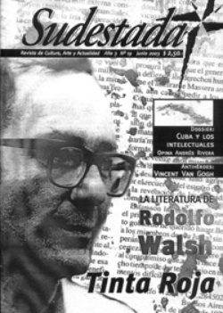

Buscar
Van Gogh. Pintar hasta morir.
Un profundo acercamiento a la obra y la vida de uno de los referentes de la pintura de occidente.
Edición N° 19
Junio 2003
Revista bimensual
Comprar edición impresaSumario
- El largo camino de Rodolfo Walsh
- Sembrar ideas
- El circo Rumano en Lomas. Había una vez... un circo
- Cuba, las ideas y las trincheras
- Van Gogh. Pintar hasta morir.
Compartir Articulo
En el silencio de la habitación de Arles el pintor sufre. Sentado en el piso desde un oscuro rincón medita, reflexiona, se contrae y padece esa sucesión de hechos inexorables que se repiten en cadena, y sufre. Considera irremediable la supervivencia. Lo atormenta, lo abruma pero sabe, es cada vez más consciente que esa debilidad es el único y momentáneo pretexto que le oxigena su pesar y lo vincula a la sociedad. Por primera vez en su vida, a los 26 años de edad siente que ha encontrado la razón de su existencia. Pintar, pintar intensamente y dar testimonio elocuente a través de explosiones de luz, destellos que irradien sus telas colmadas de colores explosivos. Comprende que el color es el único elemento capaz de satisfacer su pretensión. Se exaspera. Esta exigencia compulsiva lo rebalsa, lo domina y por eso sufre. Son incontenibles sus ataques de superproducción y el legado de obras maestras se suceden por doquier. Este incontenible deseo creador lo contiene, y lo corroe, lo atormenta.
En la carta que le envía a su confidente hermano Theo fechada en octubre de 1888, utilizada como vía de escape lo expresa de manera contundente. "Gracias por tu carta pero mira que he languidecido esta vez. Mi dinero se había agotado el jueves, así que hasta el lunes resultó terriblemente largo. Durante esos días he vivido de principalmente 23 cafés y con el pan que todavía tengo que pagar. No es culpa tuya, si la hay es mía. Porque he estado desesperado por ver mis cuadros en los marcos y he tenido demasiado para mi presupuesto ya que el mes de alquiler y la criada también había que pagarlos. Aún hoy voy a arruinarme porque también tengo que comprar la tela y prepararla yo mismo. Ando tan metido en el trabajo que no puedo detenerme de golpe".
Advierte de manera enérgica el devenir de su tragedia. Puede sentir el combate y la antítesis que desatan la razón y la pasión en su interior. Sabe que ahora no podrá detenerse hasta el resto de su vida. En un ataque de extrema lucidez lo comprueba. Sufre porque le da vergüenza depender económicamente de su hermano. Le duele porque siente que rompe el pacto. Hasta el momento Theo no ha podido vender ni un solo cuadro suyo. Vincent siente culpa pero aun así no puede detenerse. "Resulta que me había jurado no trabajar, pero todos los días sucede lo mismo. Al pasar encuentro cosas tan bellas que en fin hay que tratar de hacerlas. Comienza la caída de las hojas, se ve como amarillean los árboles. El amarillo aumenta todos los días". Ante este fenómeno, Van Gogh no puede parar, es incontrolable. Se regocija y permanece en la soledad del cuarto alterando el color amarillo, ese color que hasta el momento no existe en la pintura y continúa en la búsqueda de su verdad, modificándolo una vez más.
La revelación de la vocación
La rica experiencia en Bélgica, en la cuenca del Borinage, región donde estableció contacto muy fluido con los obreros mineros donde llega como evangelizador luego de realizar un curso de tres meses en la escuela Evangelista de Bruselas, significó la antesala de su afición a la pintura. La articulación con los trabajadores mineros y los tejedores resultan decisivos para su formación como pintor ya que se sintió liberado por fin de la aridez de los textos teológicos. Vincent denominó su experiencia en el "país negro" como el curso gratuito "en la gran universidad de la miseria". Toma consciencia de la realidad social de los trabajadores y se siente muy identificado con ellos. Al igual que cuando residió en Londres, Amnsterdam, Laeken,Wasmen, Etten, Drenthe, Nuemen y Amberes.
La realidad observada constantemente y por la cual se interesa es una sola: los hombres trabajando en fábricas, minas y campos. Y así se lo explica a su hermano. "Hace casi dos años que vivo con ellos y he aprendido a conocer bastante su original carácter, sobre todo el de los mineros. Y encuentro cada vez más algo de conmovedor y hasta desgarrador en estos pobres y oscuros obreros, que son -podría decirse- los más rechazados de todos, los más despreciados y a la vez que, en general, con imaginación vivaz pero falsa e injusta, nos representamos como una raza de malhechores y bandidos (1880)....Me he mezclado tan íntimamente en la vida de los campesinos, a fuerza de verlos constantemente, a toda hora del día, que no me atrae ninguna otra idea. (1885).
Con este espíritu de la pintura como inspiración social aprovechó la lección del realismo francés. La atracción que sintió por Millet, Daumier y Courbet es, pues consecuencia natural de la orientación de sus pensamientos y sentimientos. La influencia de Daumier se ve en numerosos diseños de Van Gogh entre 1884 y 1885 en Neumén donde vemos concentrado en el modo plástico de dar relieve a la fisonomía de los personajes. Algunas cabezas de tejedores y campesinos caracterizados mediante enérgicas deformaciones somáticas. Apunta siempre al dramatismo de lo real más que a la representación formal. Van Gogh desarrolla una serie de obra que se la clasifica como oscura, entre estas se encuentra Los Comedores de papas donde la verdad, la realidad campesina se vislumbra como nunca antes en la pintura occidental.
Por medio de una paleta en donde utiliza un alto contraste de valores, crea un ambiente intimista y nos introduce en el momento de la comida de una familia campesina. Es el fin de la jornada laboral, los rostros cansados y las manos agrietadas juegan un papel primordial en esta composición. Vincent nos acerca un mechero al centro de la mesa y por medio de ocres, naranjas y amarillos esculpe con el pincel en medio de tanta oscuridad. Las manos sostienen la comida y si bien los comensales se encuentran erguidos y con los ojos abiertos no hay comunicación entre ellos, sus miradas apesadumbradas no son correspondidas, genera tensión en el aire, no es un encuentro festivo ya que el fin del día promete el comienzo de otro agotador...
(La nota completa en la edición gráfica de Sudestada N° 19)
Comentarios
Soledad Fracchia, Jaime Galeano
Articulos más vistos


LIBRERÍA SUDESTADA

Colección infantil

Distribuidora de Libros

Suscripción

Sudestada en URUGUAY

Otros articulos de esta edición
El largo camino de Rodolfo Walsh
Periodista reconocido por sus trabajos de no ficción, Rodolfo Walsh también recorrió un largo camino en la literatura. Su trabajo ...
El circo Rumano en Lomas. Había una vez... un circo
Payasos, trapecistas, domadores, monos que se rajan, el circo llegó a Camino Negro y convocó pequeñas multitudes. Historia de una ...
Sembrar ideas
Cuba, las ideas y las trincheras
Como tantas otras veces en la historia, Cuba está en el centro de la tormenta. Artistas de todo el mundo ...